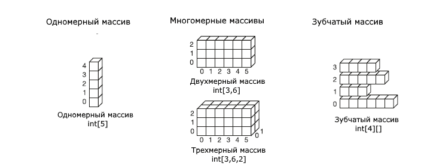

| Тема 1. Массивы. | ||
| Назад | ||
|
Массивы имеют следующие функции:
Основные понятия массивов Суммируем основные понятия массивов:
Например, возьмем массив int[,] numbers = new int[3, 4]; Массив numbers двухмерный, то есть он имеет два измерения, поэтому его ранг равен 2. Длина первого измерения - 3, длина второго измерения - 4. Длина массива (то есть общее количество элементов) - 12. Примеры массивов:
 |
||
| Конспект подготовлен Бакулиным А. М. 2022 год. | ||